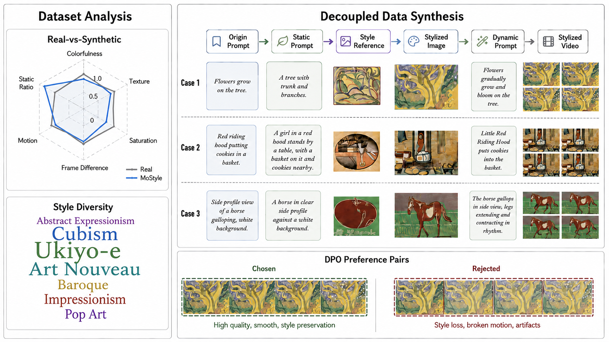
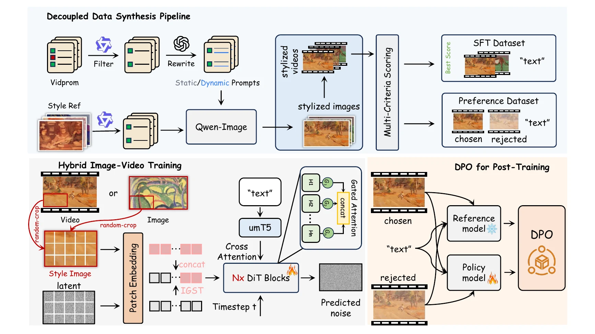

MoStyle: Stylized Video Generation via Decoupled Data Synthesis and Gated Style Token Injection
Reference-guided video generation with artistic style and dynamic content.
Abstract
Stylized video generation requires synthesizing dynamic content that reflects the artistic characteristics of a reference image while maintaining semantic control and temporal coherence. Existing fine-tuning-based approaches suffer from two recurring limitations: motion degradation caused by training on static image stylization datasets, which lack temporal supervision and erode the temporal priors of pre-trained backbones; and a representation bottleneck from encoder-based style injection, which discards fine-grained stylistic details and bounds stylization quality by the encoder's representational capacity. We address both limitations through a unified pipeline that covers dataset construction, model architecture, and training strategy. Specifically, we construct a curated stylized video dataset spanning diverse artistic styles and structured preference pairs through a decoupled content-motion synthesis pipeline that explicitly preserves temporal priors in the supervision signal. Building on this, we propose Implicit Gated Style Token Injection (IGST), which directly concatenates style patches as tokens to bypass the encoder bottleneck, disables RoPE for style tokens to remove spatial alignment bias, and applies head-wise gated attention to suppress residual structural correlations. The framework is optimized with a hybrid image-video objective and refined via Diffusion-DPO post-training using these structured preference pairs. Experiments show that our method achieves superior style fidelity and motion dynamics compared with existing baselines.
Dataset Construction

Method

Video Generation across Artistic Styles
Sixteen stylized scenes shown together, including human-object interaction and shared-style content variation.
Comparison with Other Methods
Matched prompts and style references across VideoComposer, StyleMaster, StyleCrafter, and MoStyle.